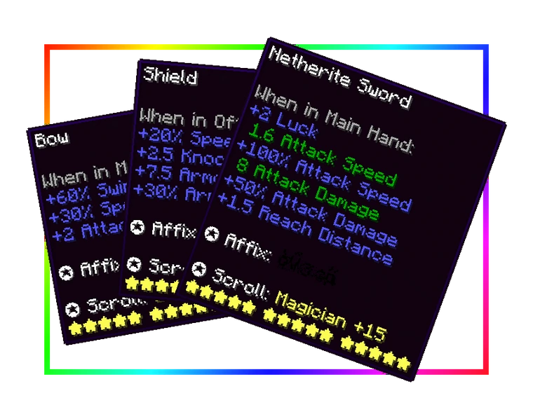
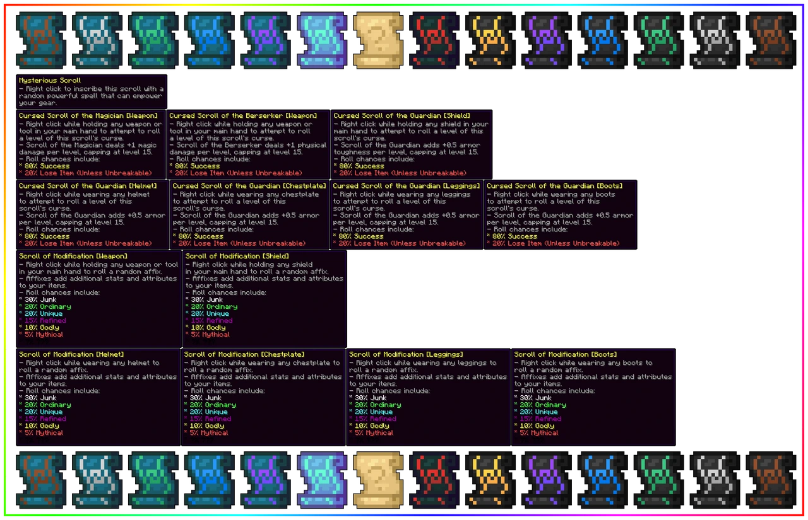

An update of an older mod that adds 24 scrolls to the game used to make weapons/armor unbreakable, or by applying gameplay changing affixes
Item verification initially only worked for base game items, such as iron swords or diamond armor, which limited its impact. I introduced tag searching to check JSONs to see if the gear falls into some category. Introducing Affix JSONs was a solution to repetitive code files, but the conversion was difficult. Constant verification in games and testing both in a dev environment and outside helped the finalization of it.

